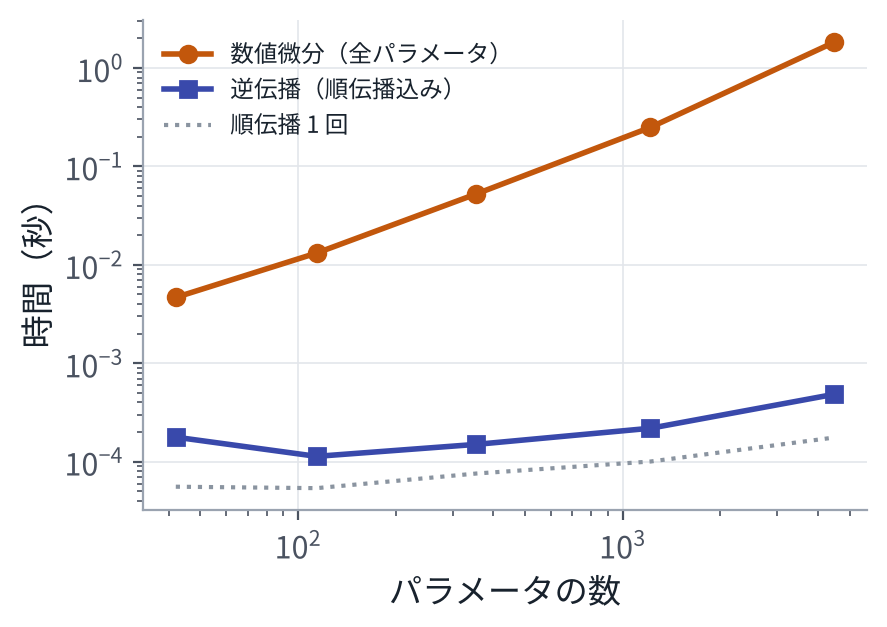
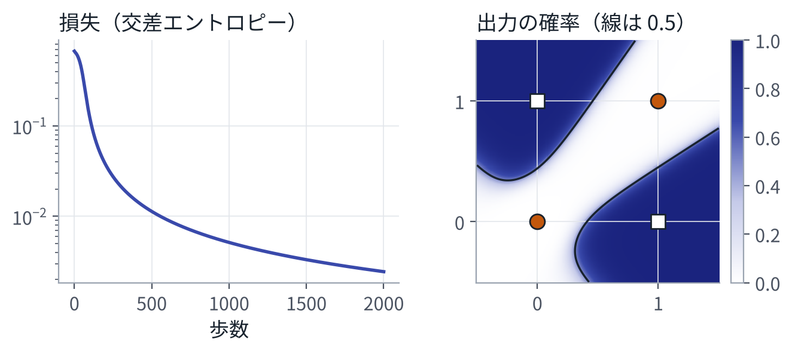

目次
1なぜ数値微分ではだめか
勾配のいちばん素朴な求め方は、重みを 1 つずつ少し動かして、損失の変化を見ることである（数値微分）。
\[ \frac{\partial L}{\partial \theta_i} \approx \frac{L(\theta + h e_i) - L(\theta - h e_i)}{2h} \]\(e_i\) は \(i\) 番目だけが 1 のベクトル、\(h\) は小さな数である。重みが \(P\) 個なら、損失の計算（順伝播）が \(2P\) 回要る。演習の 2 → 64 → 64 → 2 のネット（\(P = 4482\)）では 8964 回になる。

演習で測ると、\(P = 4482\) で、数値微分は約 1.8 秒、逆伝播は約 0.5 ミリ秒（順伝播 1 回の約 2.7 倍）で、差は 3000 倍を超えた。重みが数十億個の VLA では、数値微分は使いものにならない。逆伝播（自動微分の逆向きの方式）では、勾配の計算の手間が、関数を 1 回計算する手間の小さな定数倍で済む。これを「勾配は安い」原理と呼ぶことがある[1]。
数値微分にも使い道はある。自分で書いた逆伝播が正しいかを、小さなネットで確かめるときである（勾配の確認）。演習でもそうしている。
2連鎖律
逆伝播の中身は、微分の連鎖律だけである。1 変数なら、\(y = f(u)\)、\(u = g(x)\) のとき、
\[ \frac{dy}{dx} = \frac{dy}{du}\,\frac{du}{dx} \]である。変数が途中で何本にも分かれるときは、\(L\) が \(x\) から中間の変数 \(u_1, \dots, u_m\) を通って決まるなら、
\[ \frac{\partial L}{\partial x} = \sum_{j=1}^{m} \frac{\partial L}{\partial u_j}\,\frac{\partial u_j}{\partial x} \]となる。「\(x\) から \(L\) へ行く道ごとに、微分を掛け合わせ、すべての道について足す」と読める。この式を、出力側から順に使っていくのが逆伝播である。
3計算グラフで追う
1 個のニューロン（活性化関数なし）と 2 乗誤差の、数値の入った例で追う。\(w = 2\)、\(x = 3\)、\(b = 1\)、正解 \(y = 5\) とする。
\[ L = (w x + b - y)^2 \]計算を 1 つずつの手順に分けて、\(u = wx\)、\(z = u + b\)、\(e = z - y\)、\(L = e^2\) と書く。この手順と、値の流れを描いたものを計算グラフという。
順伝播で \(u = 6\)、\(z = 7\)、\(e = 2\)、\(L = 4\) と計算したあと、出口の \(\partial L/\partial L = 1\) から上へ戻る。
\[ \begin{aligned} \frac{\partial L}{\partial e} &= 2e = 4\\ \frac{\partial L}{\partial z} &= \frac{\partial L}{\partial e}\cdot 1 = 4\\ \frac{\partial L}{\partial y} &= \frac{\partial L}{\partial e}\cdot(-1) = -4\\ \frac{\partial L}{\partial u} &= \frac{\partial L}{\partial z}\cdot 1 = 4\\ \frac{\partial L}{\partial b} &= \frac{\partial L}{\partial z}\cdot 1 = 4\\ \frac{\partial L}{\partial w} &= \frac{\partial L}{\partial u}\cdot x = 12\\ \frac{\partial L}{\partial x} &= \frac{\partial L}{\partial u}\cdot w = 8 \end{aligned} \]どの行も、「1 つ下の勾配」×「その演算の、入力についての微分」になっている。演算ごとの微分は、次の表のように決まった形である。
| 演算 | 入力についての微分 | 勾配の配り方 |
|---|---|---|
| \(u = a + c\) | \(\partial u/\partial a = 1,\ \partial u/\partial c = 1\) | そのまま両方へ |
| \(u = a\,c\) | \(\partial u/\partial a = c,\ \partial u/\partial c = a\) | 相手の値を掛けて配る |
| \(u = a^2\) | \(2a\) | \(2a\) を掛ける |
| \(u = \sigma(a)\) | \(\sigma'(a)\) | 活性化関数の微分を掛ける（3.3 節の表） |
演習で数値微分と比べると、\(\partial L/\partial w \approx 12.000000\)、\(\partial L/\partial x \approx 8.000000\)、\(\partial L/\partial b \approx 4.000000\) で一致した。
4枝分かれでは、勾配を足す
同じ変数が 2 か所以上で使われると、勾配は、それぞれの道から来た分の和になる。連鎖律の \(\sum_j\) の部分である。\(f = xy + x\)（\(x = 3, y = -2\)）で確かめる。
直接の道からは 1、掛け算を通る道からは \(y \times 1 = -2\) が来て、\(\partial f/\partial x = 1 + (-2) = -1\) である。式で微分しても \(\partial f/\partial x = y + 1 = -1\) で一致する。実装では、勾配を代入（=）ではなく足し込み（+=）で書き、毎回の計算の前に 0 に戻す。ニューラルネットでは、1 つの層の出力が次の層のすべてのニューロンに使われるので、この「足す」がいつも起きている。
5戻る順番：出口から入口へ
ある変数の勾配を配ってよいのは、その変数を使っているすべての先から、勾配が届いたあとである。そこで、順伝播で変数ができた順番を記録しておき、その逆の順に勾配を配る。グラフの言葉では、「材料が先に来る並び」（トポロジカル順）を作り、逆からたどる。
各演算の逆伝播は、その演算の順伝播と同じくらいの手間で済む（掛け算なら、掛け算 2 回）。だから、全体の手間も順伝播の数倍で済む。図 1 の「順伝播の 2〜3 倍」はこのことである。
6自動微分を 50 行で書く
ここまでの規則を、そのままプログラムにする。数 1 つを入れる箱 Value を作り、足し算や掛け算のたびに「何から作られたか」と「勾配の配り方」を覚えさせる。最後に、出口の箱で backward() を呼ぶ。演習のコードから、骨組みだけを抜き出す。
class Value:
def __init__(self, data, parents=(), op=""):
self.data, self.grad = float(data), 0.0
self.parents, self.op = parents, op
self._back = lambda: None # 自分の勾配を、材料へ配る関数
def __add__(self, other):
out = Value(self.data + other.data, (self, other), "+")
def back(): # 足し算: 勾配をそのまま両方へ
self.grad += out.grad
other.grad += out.grad
out._back = back
return out
def __mul__(self, other):
out = Value(self.data * other.data, (self, other), "×")
def back(): # 掛け算: 相手の値を掛けて配る
self.grad += other.data * out.grad
other.grad += self.data * out.grad
out._back = back
return out
def backward(self):
order = topological_order(self) # 材料が先に来る並び
self.grad = 1.0
for v in reversed(order): # 出口から入口へ
v._back()演習の ch03_4_autograd.py には、これに累乗、tanh、exp、log、ReLU と、トポロジカル順を作る部分を足した、全体で 50 行ほどのものが入っている。これで 2 → 4 → 1 のネットを組み、XOR を学習させた。
- 勾配の確認。重み 17 個の勾配は、数値微分と最大 \(9.8 \times 10^{-11}\)、次の節の行列の式と最大 \(5.6 \times 10^{-17}\) の差で一致した。
- グラフの大きさ。4 点ぶんの損失を 1 回計算すると、計算グラフの節点は 245 個になる。
- 学習。初期値の乱数 1 では、損失は \(0.671 \to 0.123\)（100 歩）\(\to 0.0024\)（2000 歩）と下がり、出力の確率は \((0.00, 0.997, 0.997, 0.004)\) になった。乱数 0 では、損失が \(0.3487\) で止まり、確率は \((0.002, 0.499, 0.999, 0.501)\) のままだった。2 点を五分五分と答える状態で、損失は \(2\log 2 / 4 \approx 0.347\) にほぼ等しい。3.3 節で、隠れ層 4 個のネットが 100 回中 1 回だけ失敗した、その 1 回である。

実際には書かなくてよい。PyTorch や JAX は、ここで書いた Value と同じことを、数 1 つではなく行列や多次元の配列を単位にして行う（自動微分）。損失を計算して loss.backward() と書けば、全部の重みの .grad に勾配が入る。中で起きていることは、図 2 と同じである。
7行列の層の式
数 1 つずつでは遅いので、実際のネットでは行列の単位で逆伝播を書く。演習のコードに合わせて、データ \(N\) 個を行に並べた行列で書く。層の入力を \(X\)（\(N \times n\)）、重みを \(W\)（\(n \times m\)）、バイアスを \(b\)（長さ \(m\)）とし、
\[ A = X W + b \]とする（\(b\) は各行に足す）。後ろから \(G = \partial L/\partial A\)（\(N \times m\)）が届いたとき、次の 3 つが成り立つ。
\[ \begin{aligned} \frac{\partial L}{\partial W} &= X^\top G\\ \frac{\partial L}{\partial b} &= \sum_{\text{行}} G\\ \frac{\partial L}{\partial X} &= G\, W^\top \end{aligned} \]確かめ。成分で書くと \(A_{ij} = \sum_k X_{ik} W_{kj} + b_j\) である。\(W_{kj}\) は、\(j\) 列目の \(A_{1j}, \dots, A_{Nj}\) のすべてに効くので、枝分かれの和を取って
\[ \begin{aligned} \frac{\partial L}{\partial W_{kj}} &= \sum_{i=1}^{N} \frac{\partial L}{\partial A_{ij}}\,\frac{\partial A_{ij}}{\partial W_{kj}}\\ &= \sum_{i} G_{ij}\, X_{ik} = (X^\top G)_{kj} \end{aligned} \]となる。\(b\) と \(X\) も同じように確かめられる。大きさも合っている：\(X^\top G\) は \((n \times N)(N \times m) = n \times m\) で \(W\) と同じ、\(G W^\top\) は \((N \times m)(m \times n) = N \times n\) で \(X\) と同じである。演習では、この式と、Value で 1 要素ずつ計算した勾配の差が、最大 \(4.4 \times 10^{-16}\) だった。
活性化関数 \(H = \sigma(A)\) は成分ごとの計算なので、勾配も成分ごとに微分を掛ける（\(\odot\) は成分ごとの積）。
\[ \frac{\partial L}{\partial A} = \frac{\partial L}{\partial H} \odot \sigma'(A) \]ネット全体の逆伝播
出口では、2 章で求めたとおり、softmax と交差エントロピーを合わせた勾配が「予測 − 正解」になる。\(P\) を予測した確率、\(Y\) を正解を 1 にした並び（one-hot）を、行に並べたものとして、
\[ G_{\text{出口}} = \frac{\partial L}{\partial Z} = \frac{1}{N}\big(P - Y\big) \]である（\(L\) はデータ \(N\) 個の平均）。あとは図 5 を出口から入口へ繰り返す。層 \(l\) の 1 次式の結果を \(A_l\)、出力を \(H_l\)、\(G_l = \partial L/\partial A_l\) とすると、
\[ \begin{aligned} \frac{\partial L}{\partial W_l} &= H_{l-1}^\top G_l,\qquad \frac{\partial L}{\partial b_l} = \sum_{\text{行}} G_l\\ G_{l-1} &= \big(G_l\, W_l^\top\big) \odot \sigma'(A_{l-1}) \end{aligned} \]ReLU なら \(\sigma'(A) = \mathbb 1[A > 0]\) である。演習 ch03_mlp.py は、この式をそのまま書いた 2 → 64 → 64 → 2 のネットで、逆伝播の勾配と数値微分の相対誤差は、30 か所で最大 \(2.6 \times 10^{-7}\)、中央値 \(1.8 \times 10^{-9}\) だった。
8順伝播で取っておくもの
図 5 のとおり、逆伝播には順伝播の途中の値（各層の入力 \(H_{l-1}\) と \(A_l\)）が要る。そのため、学習のときは、層の数 × データの数 × 幅に比例するメモリを使う。学習しない（推論だけの）ときは途中の値を捨ててよいので、メモリはずっと少なくて済む。大きなモデルの学習で GPU のメモリが足りなくなるのは、重みそのものより、この途中の値や、Adam が重みごとに持つ値（3.5 節）のためであることも多い（8 章）。
9演習
演習 3.4自動微分を書く
Value クラス、計算グラフの例、枝分かれ、XOR の学習、行列の式の確認、数値微分との時間の比較。30 秒ほどで終わる。
python3 vla_math/ch03_4_autograd.py出力の一部：
(2) 1 個のニューロンと 2 乗誤差: L = (w x + b − y)²
w 値 2.0 ∂L/∂(この節点) = 12.0
x 値 3.0 ∂L/∂(この節点) = 8.0
u = w x 値 6.0 ∂L/∂(この節点) = 4.0
L = e² 値 4.0 ∂L/∂(この節点) = 1.0
(3) 同じ変数を 2 回使う: f = x y + x（x = 3, y = −2）
f = -3, ∂f/∂x = -1（= y + 1. 2 本の道の勾配の和）, ∂f/∂y = 3
(6) 数値微分と逆伝播の時間（2 → H → H → 2 の ReLU ネット、渦巻き 400 点、各 3 回の最短）
H = 64: パラメータ 4482 個. 順伝播 1 回 0.176 ms、逆伝播込み 0.484 ms（順伝播の 2.7 倍）、数値微分 1.824 s（逆伝播の 3,768 倍）
見るところ：
- (2) 図 2 の橙の数と一致する。
- (6) 時間は計算機によって変わるが、数値微分が重みの数とともに増え、逆伝播が順伝播の数倍にとどまることは変わらない。
変えてみる：Value に sigmoid を足し、出力の \(\sigma\) を exp と割り算で組み立てた場合と勾配が一致することを確かめる。backward() の前に勾配を 0 に戻すのを忘れると、何が起きるかを見る。
演習 3.4 その 2行列で書いた逆伝播
重みは numpy の配列で持ち、順伝播、逆伝播、Adam を手で書いてある（MLP クラス、60 行ほど）。10 秒ほどで終わる。
python3 vla_math/ch03_mlp.py出力の一部：
(1) 線形のモデル（入力 2 → 出力 2）
重み 6 個、学習後の交差エントロピー 0.604、検証データの正解率 63.7%
(2) 隠れ層 2 つのニューラルネット（2 → 64 → 64 → 2、ReLU）
0 回目: 交差エントロピー 0.956、検証データの正解率 50.0%
200 回目: 交差エントロピー 0.003、検証データの正解率 99.7%
重みの数 4482 個
(3) 勾配の確認（逆伝播 と 数値微分）
30 か所で比べた相対誤差: 最大 2.6e-07、中央値 1.8e-09
見るところ：(3) で、ReLU の折れ目をまたぐと数値微分のほうがずれるので、差分の幅を小さく取っている。
変えてみる：活性化関数を np.tanh にする（逆伝播の微分も \(1 - h^2\) に変える）。
10まとめ
- 逆伝播は、連鎖律を出口から順に使って、全部の重みの勾配を 1 往復で求める。手間は順伝播の数倍で、重みの数によらない。数値微分は重みの数だけ順伝播が要る。
- 演算ごとの勾配の配り方は決まっている。足し算はそのまま、掛け算は相手の値を掛けて、活性化関数はその微分を掛けて配る。枝分かれした変数には、各道からの勾配を足す。
- 行列の層 \(A = XW + b\) では、\(\partial L/\partial W = X^\top G\)、\(\partial L/\partial X = G W^\top\) である。出口の勾配は、2 章の「予測 − 正解」である。
11確かめる問題
- 図 2 で、\(w = 1\)、\(x = 2\)、\(b = 0\)、\(y = 1\) のときの、すべての節点の値と勾配を求めよ。
- \(f = x^2 y + x\) の \(\partial f/\partial x\) を、計算グラフの道ごとの和として求め、ふつうに微分した結果と比べよ。
- 層 \(A = XW + b\) について、\(\partial L/\partial b = \sum_{\text{行}} G\) と \(\partial L/\partial X = G W^\top\) を、成分で書いて確かめよ。
- 重みが \(P\) 個のとき、数値微分で勾配を求めると順伝播が何回要るか。逆伝播ならどうか。
- 推論だけなら、順伝播の途中の値を捨ててよいのはなぜか。
12読むもの
※参考文献
- A. Griewank, "Who invented the reverse mode of differentiation?," Documenta Mathematica, Extra Volume: Optimization Stories, 389–400, 2012. https://www.emis.de/journals/DMJDMV/vol-ismp/52_griewank-andreas-b.html
- A. Karpathy, "Neural Networks: Zero to Hero," 動画の講義. https://karpathy.ai/zero-to-hero.html
- 斎藤康毅『ゼロから作る Deep Learning Python で学ぶディープラーニングの理論と実装』オライリー・ジャパン, 2016.
- S. J. D. Prince, "Understanding Deep Learning," MIT Press, 2023. 本の全文が公開されている。https://udlbook.github.io/udlbook/